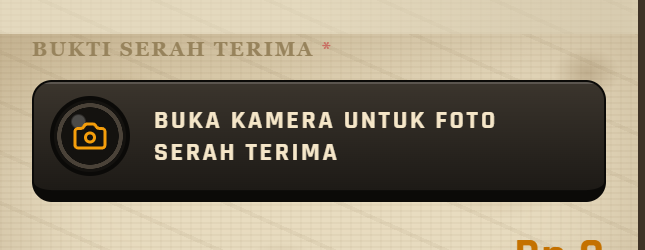
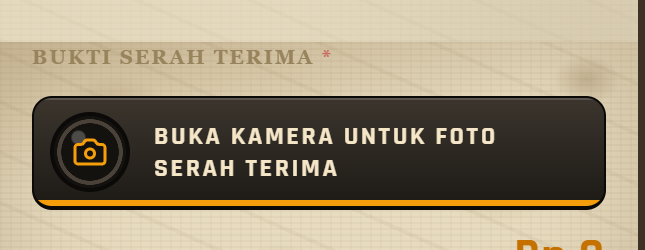
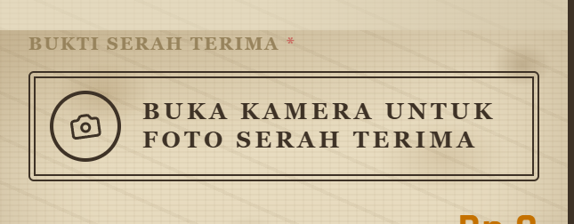
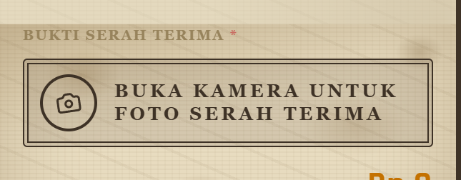
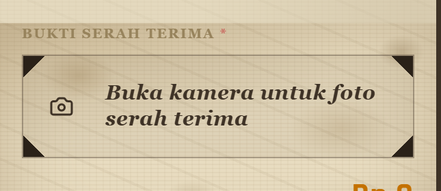
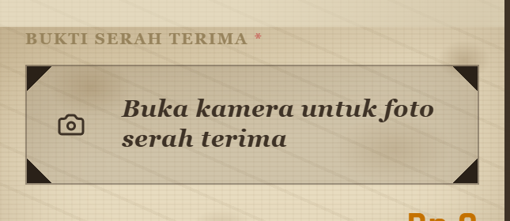
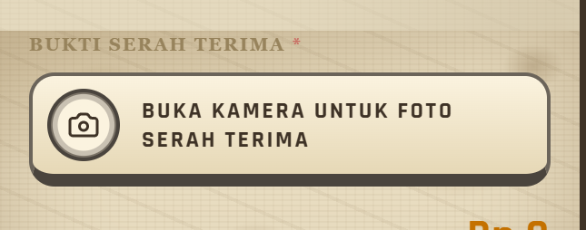
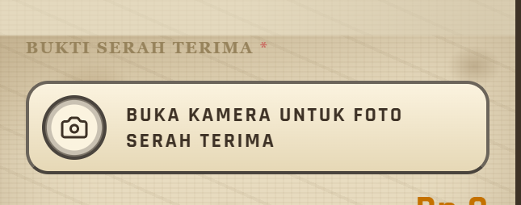

Each one is the real button with new CSS, on the real paper. No amber fill. Works the same with Lite Mode on.


What you called "tech".


Printed on the paper in brown ink, a double line like a form box. Pressed: the ink darkens.


An empty photo spot with the 4 black corners of an old album. The photo you take sits in these corners.


Still 3D, but ivory and nickel like the old typewriter, not black plastic. Pressed: it sinks.